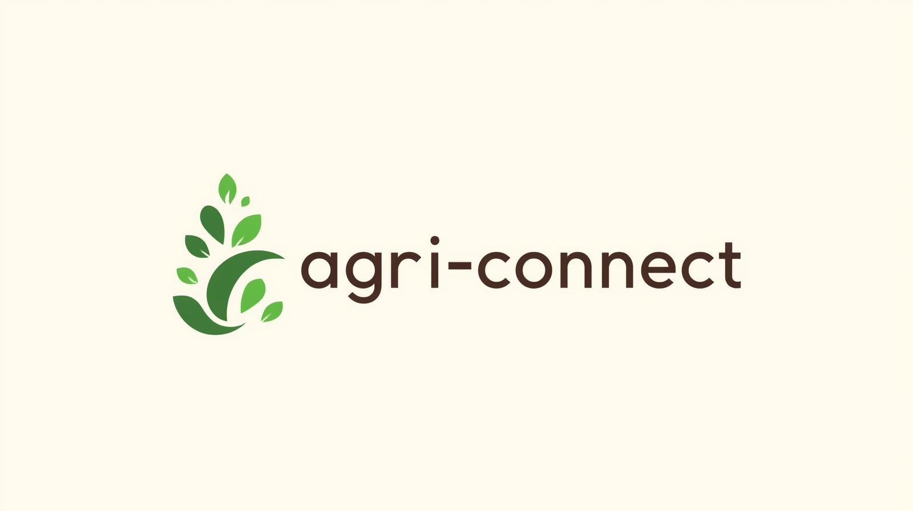

My Project

Project One
AGRI-CONNECT is a hackathon project built under UN SDG 2: Zero Hunger. It empowers farmers with insights on suitable crops to grow and builds a food-sharing network to reduce waste and improve food accessibility.
GitHub